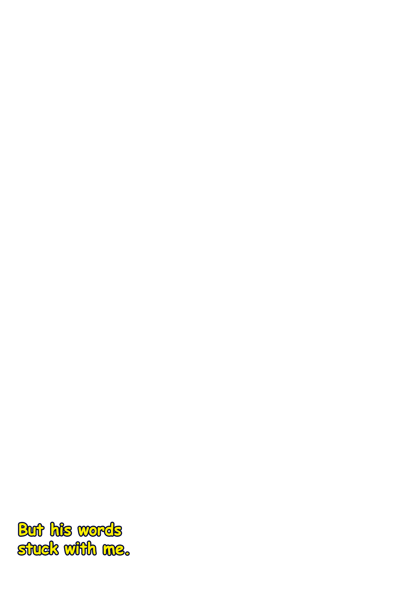
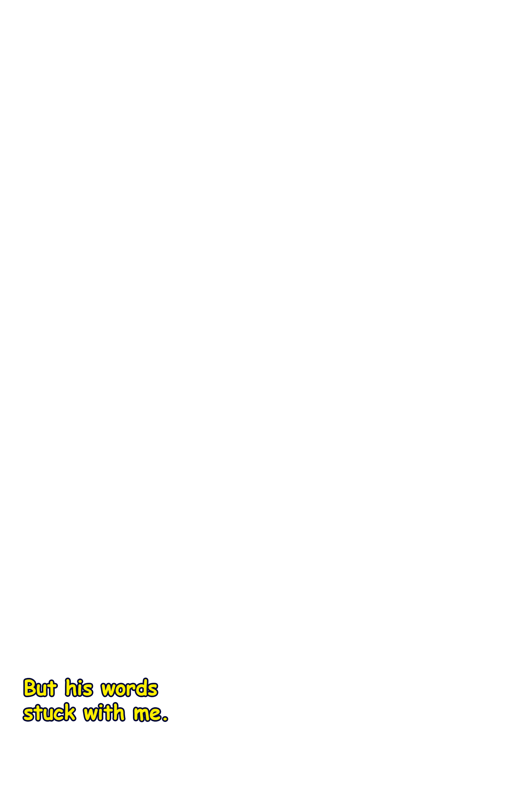
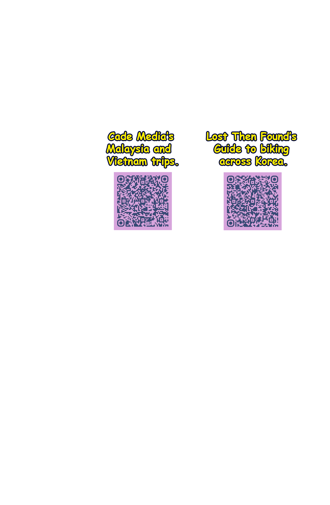
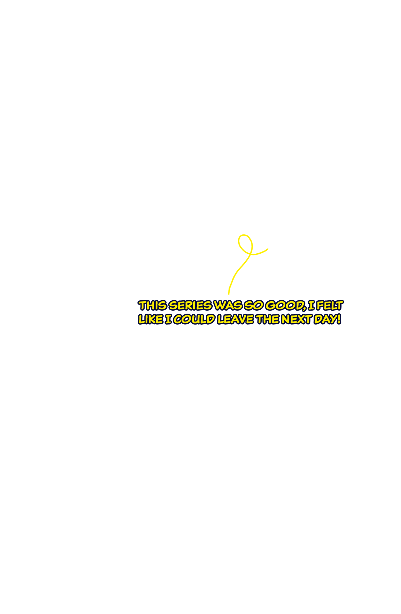
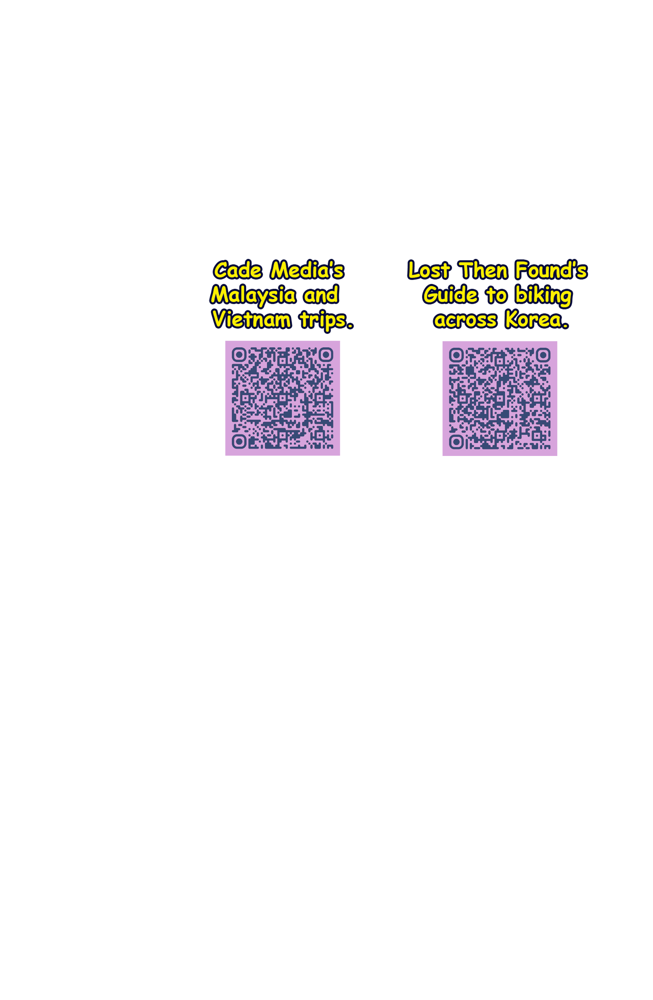
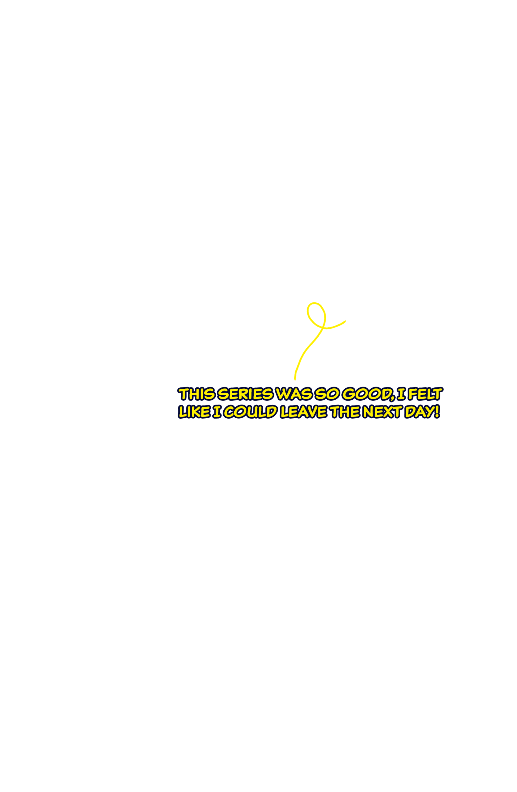

 





Day 1: Guri to Yeoju
This is where you can write about the beginning of your journey. Describe the excitement of starting the trip, the weather, your feelings, or any interesting encounters from the first day.
You can add multiple paragraphs here to tell the full story of your first day on the road. Include details about the route, the scenery, the challenges, and the highlights.